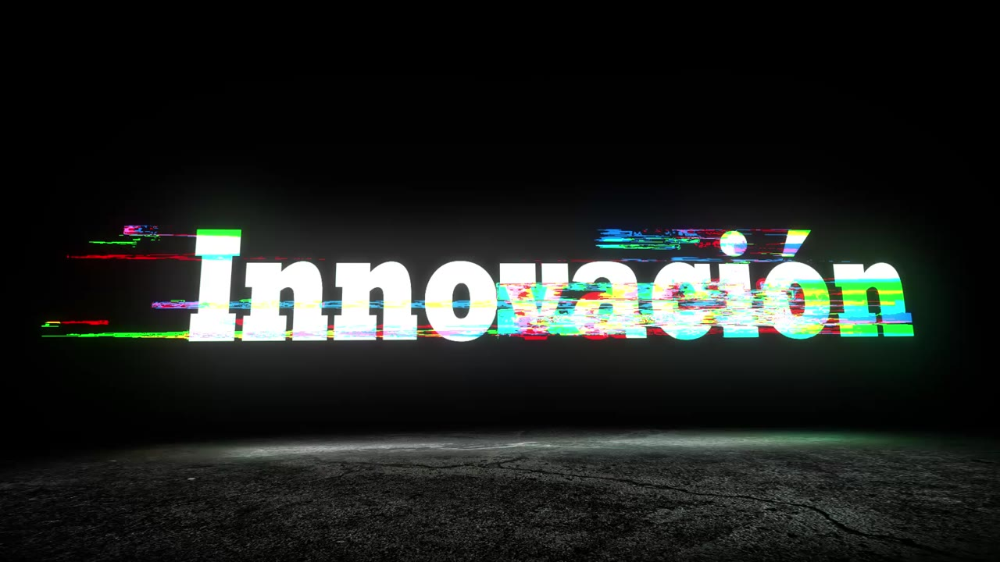

← Todos los proyectos
Animación · Tipografía
Exploraciones de Motion Graphics
Tres piezas que exploran dinamismo, innovación y profesionalismo a través de tipografía animada.

SOBRE EL PROYECTO
Palabras que adquieren ritmo, luz y movimiento.
La colección reúne tres ejercicios de animación: Dinamicidad, Innovación y Profesionalismo. Cada pieza utiliza un tratamiento propio para convertir una palabra en una breve experiencia visual.
Video final
EXPLORACIÓN VISUAL
Tres conceptos, tres tratamientos.
Dinamicidad trabaja con repetición y desplazamiento tipográfico; Innovación utiliza destellos y transiciones, y Profesionalismo combina color, luz y movimiento vertical. Las tres piezas se pueden reproducir por separado.
AUDIOVISUAL